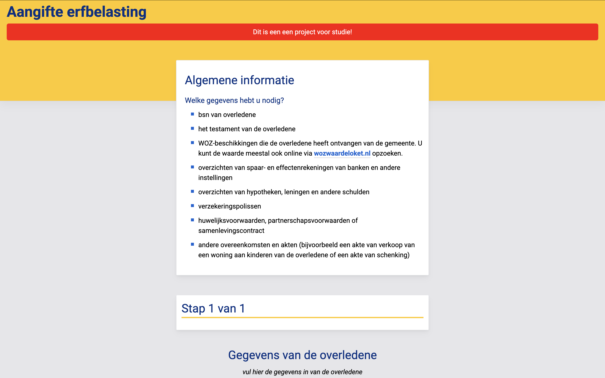
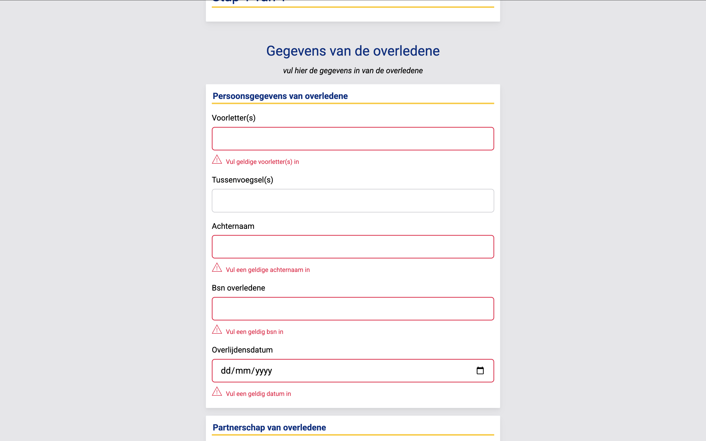
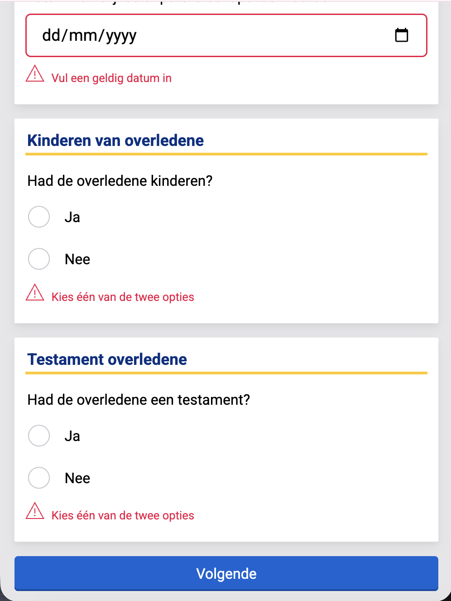
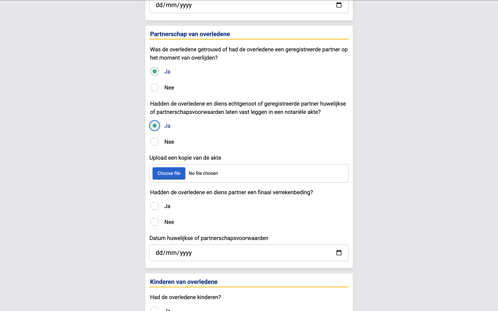

De opdracht


Bij Browser Tech moesten we een erfbelastingformulier van de overheid nabouwen in de stijl van de NS, inclusief foutmeldingen en op een robuuste manier. Ik heb hier ontzettend veel geleerd, niet alleen over formulieren maar ook over HTML in het algemeen. Wat ik fijn vond aan dit project was dat er duidelijke richtlijnen waren waar ik me aan moest houden. Dat gaf me structuur, en ik merkte dat ik daar goed op ging. Ik wist wat er van me verwacht werd en kon daar naartoe werken. Accessibility en validatie kwamen hier ook echt aan bod, en ik realiseerde me dat er veel meer bij komt kijken dan ik dacht. Het is niet alleen een formulier neerzetten, je moet nadenken over hoe mensen het gebruiken, ook mensen die een schermlezer gebruiken of alleen een toetsenbord.

Wat zou ik anders doen
Als ik het opnieuw zou doen zou ik nog meer tijd steken in de validatie. Ik had namelijk nog meer willen doen met JavaScript validatie. Nu was het bijna alleen gebleven bij CSS validatie.
